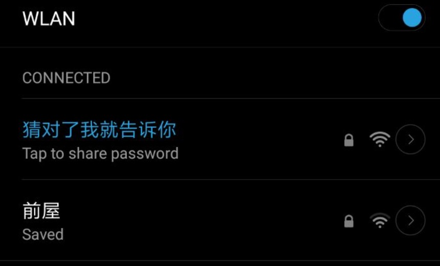
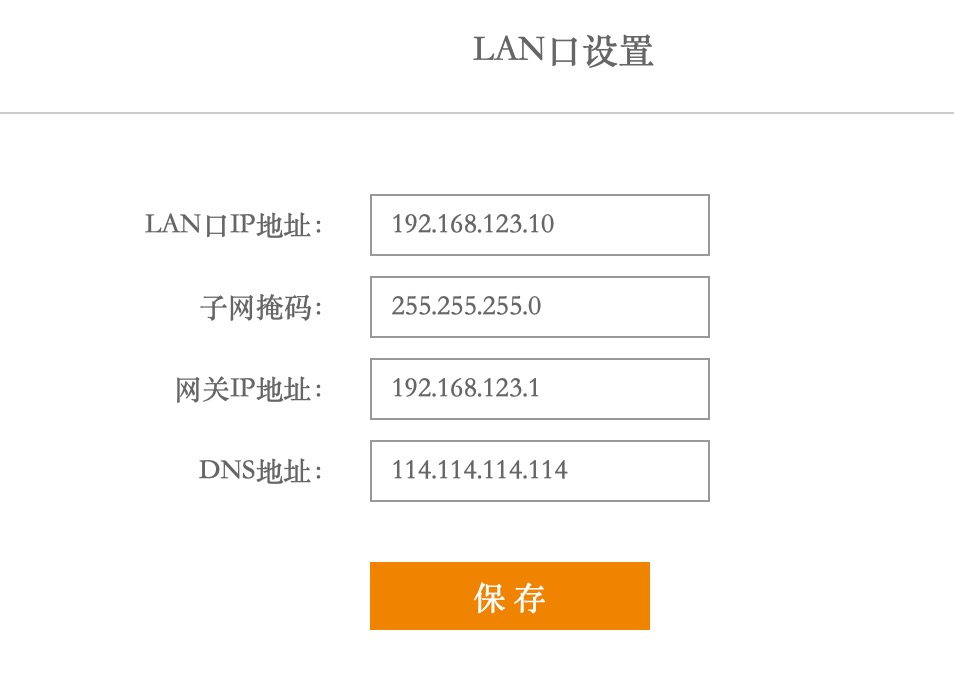
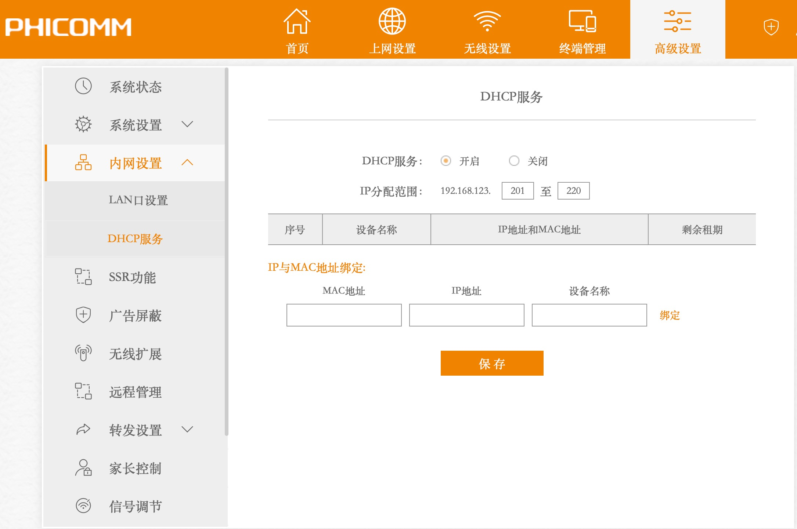
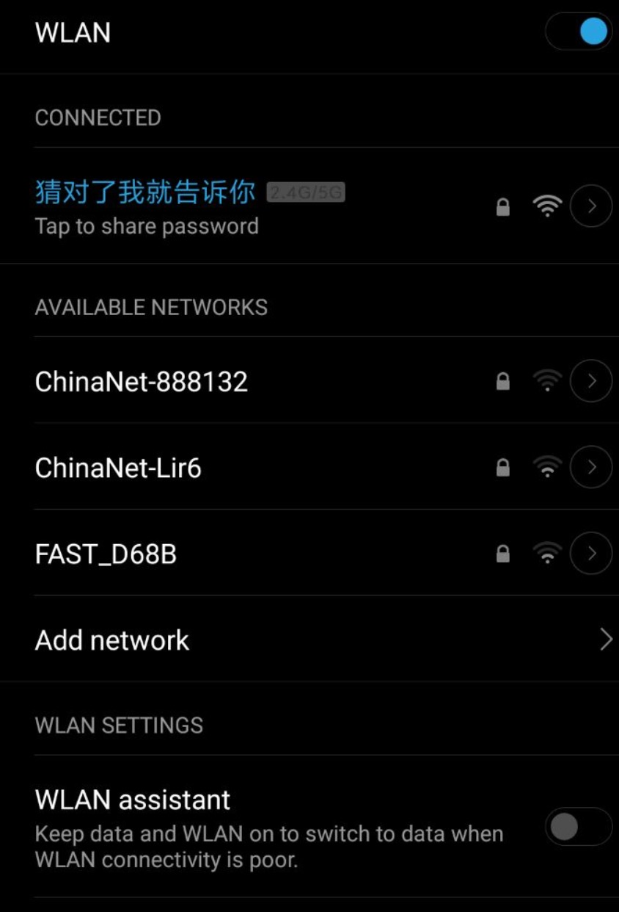

起因
1、前屋小米电视无法接收到后屋主路由的无线信号了（以前可以接收到的）。
2、我爸在前屋，头条里的视频也不能顺畅打开。只能看看网页了。
（但是实际测速结果还是很好的）
回家之前调研，有四种改进方案如下。
A、有线。有线–> 前屋路由器
需要用电钻，二楼打洞。需要买网线35米+路由器。
优点：最稳定，网速最快。
B、电力猫
原理：使用家中电力线承载网络信号。需要买电力猫*2。
网速未知。看网上帖子，网速要大打折扣。网速还会受到家里大功率电器的干扰。
C、mesh组网
需要买支持mesh组网的路由器。或者，有类似路由器，刷固件。贵。
D、无线桥接/无线中继
加一路由器，放二楼西侧或一楼西侧。目的是减少穿墙层数。需要买一有无线桥接功能的路由器。
具体实施
可以先使用方案D。效果不好的话，再加网线，转方案A。
购买二手斐讯k2和百兆室外网线35米。考虑到家里暂时用不到千兆网，同时网上也没有看到千兆室外网线，遂暂采取百兆。
使用方案D，无线桥接
结果，还是不够稳定。
前面爷爷屋里的泰捷电视盒子播放视频偶尔也会卡。有两个无线信号，不方便。
使用方案A，光猫 – [WAN] 主路由 [LAN]–[WAN] 副路由 [LAN]–小米电视
上面的方式会产生两个SSID

有两个无线信号，还需要手动切换信号，麻烦。
LAN – LAN 这样可以使家里的网络都在同一个网段（192.168.123.0/24）
光猫 – [WAN] 主路由 [LAN]– [LAN]副路由 [LAN]–小米电视
副路由配置LAN口地址

更改之后，路由器管理地址变为http://192.168.123.10 此地址（192.168.123.10）是主路由DHCP地址池之外的地址。
副路由配置DHCP。

网上资料都说不能开启DHCP服务。我感觉可以开启DHCP服务，只要与主路由的DHCP地址池没有冲突即可。
结果
把两个SSID统一成一个了。

测试网速
用我爸的手机，看头条视频很顺畅了。小米电视播放也很流畅了，就是广告太多了。
疑问
即使开了副路由的DHCP，各个设备分配到的IP还是主路由的地址池。
吐槽
1、同是小米6，我的WiFi接收信号要比我爸好很多。之前没改网络的时候，我在前屋也可以很顺畅的播放视频。
2、小米电视广告也太多了。而且，应用商店里无法找到直播软件。系统里也不支持看电视直播。还需要下载当贝市场.apk导入进去，在这个市场里下电视猫3.0等直播软件。
猜测
最近一段时间，数据流量和无线都变差了。
可能是因为在建设5G。运营商把一些4G基站撤掉了，在更新为5G基站。4G跟5G不兼容。